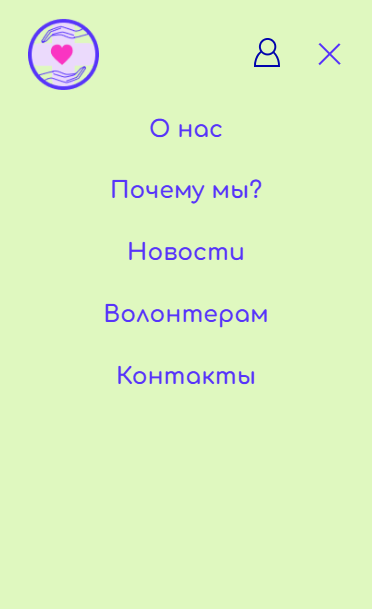
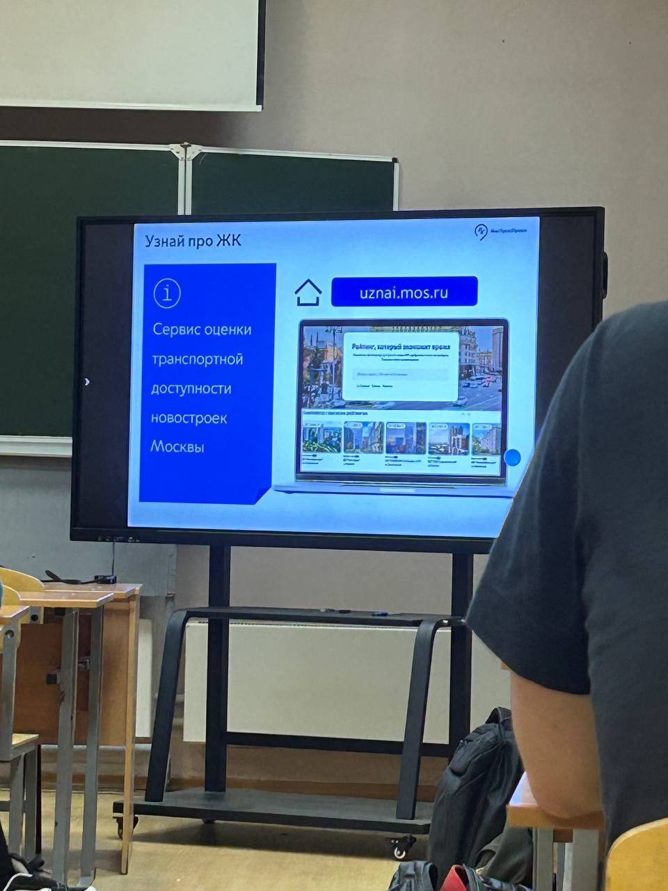

Здесь мы публикуем новости о ходе работы над проектом.
15 марта 2025
Завершена работа над дизайном
Наша команда дизайнеров завершила работу над макетами всех основных страниц сайта. Дизайн выполнен в соответствии с принципами доступности и удобства использования.
Автор: Колотыгин Д.А.
16 апреля 2025
Готова адаптивность сайта под планшеты и мобильные устройства
Сегодня завершена важная веха в разработке проекта - полная адаптация интерфейса для мобильных устройств и планшетов. Это ключевое достижение, так как более 60% наших пользователей
будут обращаться к сервису со смартфонов.
В ходе работы были реализованы:
- Гибкая сетка макета, автоматически подстраивающаяся под размер экрана
- Оптимизированная навигация с крупными кликабельными элементами
- Специальная версия форм ввода с увеличенными полями
- Адаптивные изображения, которые не выходят за границы экрана
- Упрощенный процесс подачи запроса о помощи (всего 3 шага)
Главная страница на смартфоне

Открытое бургер-меню на смартфоне
Автор: Колотыгин Д.А.
18 апреля 2025
Наша команда посетила Мосволонтер
Сегодня наша команда посетила главный волонтерский центр Москвы - "Мосволонтёр", где состоялась важная рабочая встреча. Мы представили наш проект "Поддержка рядом" и обсудили
возможности сотрудничества.

Общее фото

Презентация функционала
Во время встречи мы подробно рассказали о функционале нашей платформы:
- Как будет работать система запросов помощи от людей с ОВЗ
- Каким образом волонтеры смогут находить подходящие задания
- Механизмы обратной связи и оценки качества помощи
Автор: Колотыгин Д.А.
22 мая 2025
Взаимодействие с партнером университета - МосТрансПроект
На этой неделе наша команда посетила познавательную лекцию от стратегического партнера университета - МосТрансПроекта. Это ведущая организация в области
транспортного планирования и инфраструктурных решений Москвы, которая активно внедряет современные технологии в свою работу.

Знакомство с проектами компании
Ключевые моменты из выступления представителей компании:
- Искусственный интеллект в анализе транспортных потоков - система обрабатывает данные с 383 датчиков по всей Москве
- Безопасное хранение данных - используется многоуровневая система защиты информации, соответствующая государственным стандартам
- BI-платформа для принятия решений на основе 55 различных показателей
- Разработка "цифрового двойника" транспортной системы города
- Система автоматического контроля качества данных (Data Quality)
Особый интерес вызвала их разработка - "Узнай про ЖК" - рейтинговая система, которая оценивает жилые комплексы по 30 параметрам, включая доступность транспорта и
развитость инфраструктуры. Этот продукт уже интегрирован с крупнейшими площадками недвижимости и будет включен в платформу "Наш Дом РФ".
"Наши технологии позволяют не просто собирать данные, а создавать интеллектуальные системы, которые реально улучшают качество жизни в городе", - отметил представитель
МосТрансПроекта.
Автор: Колотыгин Д.А.